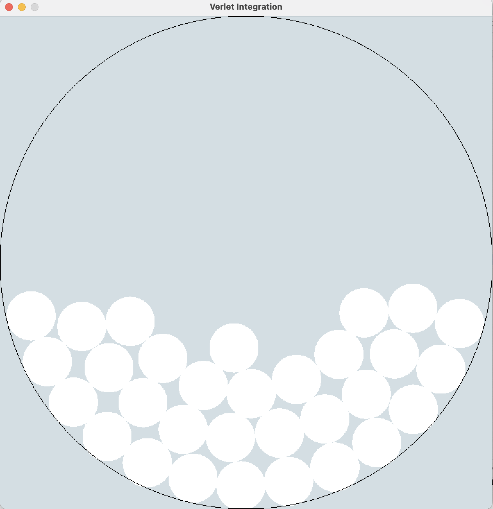
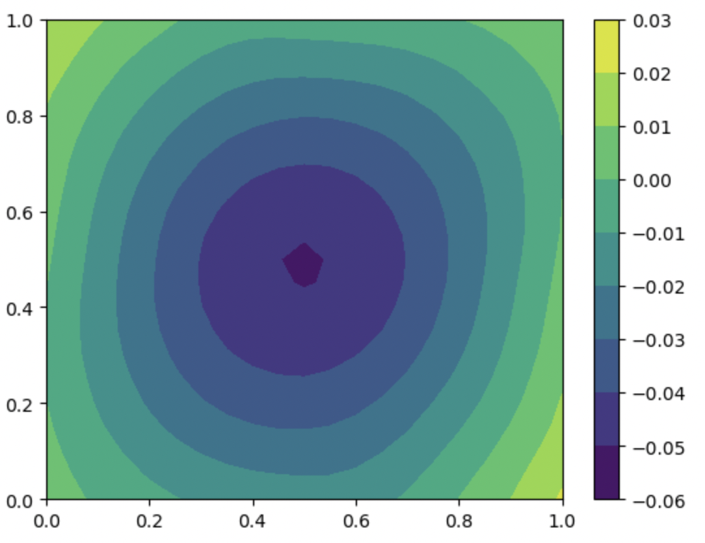
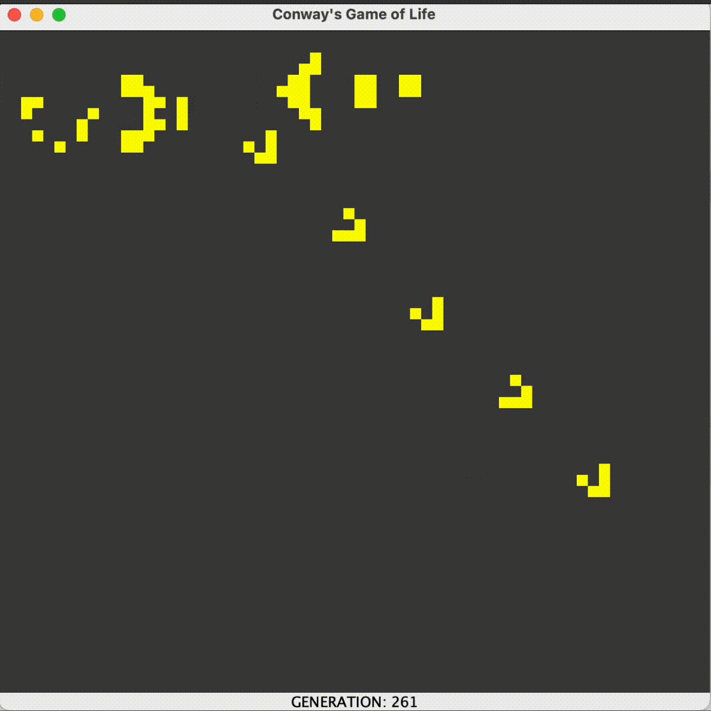

Verlet Integration
- Uses SDL2 and OpenGL
- Written without GLUT, GLEW, or GLFW for the purposes of learning basic OpenGL and the graphics pipeline
- Github

Poisson Equation Neural Network
- Jupyter notebook to solve the Poisson Equation with Dirichlet Boundary Conditions
- Uses pytorch to train neural network
- Uses matplotlib to graph solution and errors
- Can be configured to solve any Poisson Equation written in numpy
- Github

Conway's Game of Life
- Written with Java Swing Framework
- Default setting contains Bill Gosper's Glider Gun
- Can pause with Spacebar and click to create/delete cells
- Github

Tennis Image Analysis AI
- Written in Python
- Uses YOLO object detection model and Pytorch Resnet50 neural network
- Uses reference points to predict coordinates of players and ball on court
- Utilizes libraries: ultralytics, pytorch, opencv, pickle, pandas
- Github